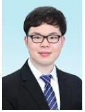

이메일: dididudud@naver.com | 전화번호: 010-1234-5678
주소: 부산광역시 부산진구
저는 실용적인 개발자입니다. 다양한 Intel DX 과정을 통해 Python, HTML, PLC, 엑추에이터 제어 등을 활용하여 프로젝트를 진행할 계획을 가지고 있으며, 대학 졸업까지 현장에서 근무한 경험을 바탕으로 실용적이고 효율적인 구조의 변화를 가져왔습니다. 이러한 경험을 바탕으로 공장에서 생산 시 필요성을 느낀 부분에 대한 개선을 하는 개발자가 되겠습니다.
자동화 프레스 유지보수및 단순생산업무
캡스톤 디자인 프로젝트로 스마트팜을 제작하기 위해, 각종 센서로 수집한 데이터를 LCD에 표시하고 이를 바탕으로 자동 제어되는 환경을 아두이노를 통해 구축하는 코딩 및 배선 작업을 수행하였습니다.
현재 인텔 AI 융합 DX 마스터 과정을 수강 중이며, Python, HTML, PLC, 그리고 엑추에이터에 대해 학습하고 있습니다.